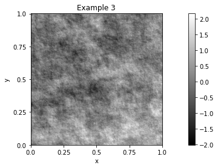
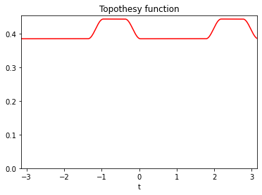
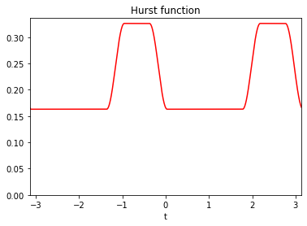

Background
Section author: Frédéric Richard <frederic.richard_at_univ-amu.fr>
PyAFBFdb is supplementary to the package PyAFBF. The package PyAFBF is devoted to the simulation of rough anisotropic textures of images. It is documented on the github page and in the papers [1], [2]. PyAFBFdb enables building and managing database of textures generated from PyAFBF.
A texture example generated with PyAFBF is shown below
Such a texture is sampled from a random field called the anisotropic fractional Brownian fields. The probability distribution of this field is characterized by two functions \(\tau\) and \(\beta\) , called the topothesy function and the Hurst function, respectively. These two functions determine the directional properties of the field. They can be represented as smooth step functions as show below.
 The PyAFBFdb package enables to generate database formed by
a series of field models by sampling the step coefficients of the Hurst and topothesy functions at random,
a series of texture images by sampling from each field model.
A typical example of a database includes a field model as given by its Hurst and topothesy functions, and a texture image sampled from the model.
In addition, an example also includes some texture features related to the Hurst functions:
the minimal value of the Hurst function, called the Hurst index:
\[H = \min_{s, \tau(s)>0} \beta(s).\]the length of the argmin set of the Hurst function:
\[\mathcal{L}_H = \mathrm{length}\left(\{s \in \left[\frac{-\pi}{2}, \frac{\pi}{2}\right], \beta(s)=H, \tau(s)>0 \}\right).\]the central orientation \(\varphi_H\) of the argmin set of the Hurst function.
In the example shown above they are \(H = 0.16\), \(\mathcal{L}_H = 1.74\) and \(\varphi_H = 0.91\).
The basics for manipulating the database build by PyAFBFdb are described in the quickstart examples.